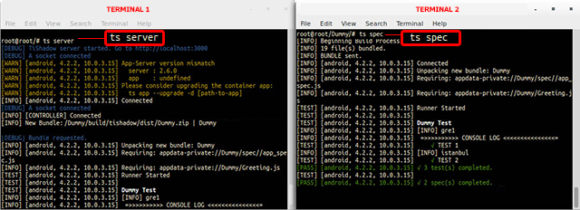
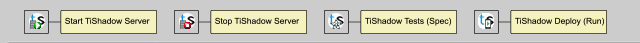
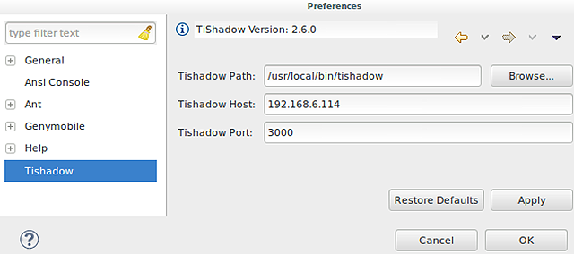
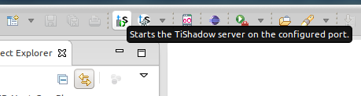
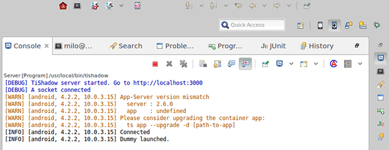
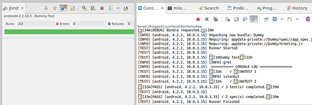

Web: http://gzunino.github.io/tishadow-eclipse-plugin/
TiShadow essentially works by building and installing a single app on iOS and Android. This acts as a host or controller on the device. That client app connects to your TiShadow server which pushes your Titanium project source code and resources out to the device and runs it as if it was compiled into the client app.

This plugin does a very good job on making the creation e installation as easy as possible to avoid using the OS terminals (consoles) at all. For instance, to run the TiShadow server and run the tests without using this plugin it's necessary to open 2 terminals. In this way, the user can use all the features the TiShadow provides in a transparent way.

Using all the capabilities Eclipse provides, like wizards, shortcuts, among others, it is possible to create a TiShadow base application, appify an existing Titanium project, deploy new changes on the application code and one of the best features: the abitily to run tests and see the reports on junit format.
Point the following URL to your eclipse update site manager to install TiShadow Plugin:
Eclipse/Titanium Studio:
http://gzunino.github.io/tishadow-eclipse-plugin/p2/If you get an error installing similar to this:
Cannot complete the install because one or more required items could not be found.
Software being installed: TiShadow Feature 0.0.1.201401061758 (com.belatrixsf.tishadow.feature.feature.group 0.0.1.201401061758)
Missing requirement: TiShadowTestView 0.0.1.201401061758 (com.belatrixsf.tishadow.tests 0.0.1.201401061758) requires 'bundle org.eclipse.jdt.junit 0.0.0' but it could not be found
Cannot satisfy dependency:
From: TiShadow Feature 0.0.1.201401061758 (com.belatrixsf.tishadow.feature.feature.group 0.0.1.201401061758)
To: com.belatrixsf.tishadow.tests [0.0.1.201401061758]This error during installation of the plugin is due it has some dependencies to JDT plugins, and you probably don't have the eclipse update site added/enabled to look for those dependencies.
You may try to add/enable the eclipse update site to your available software sites and then checking "Contact all updates sites during install..." in the Install Dialog.
Note: The update site URL will depend on you Eclipse/TitaniumStudio. For a standard TitaniumStudio 3.3 should be:
http://download.eclipse.org/releases/keplerAs soon as you have installed TiShadow plugin for Titanium, make sure the plugin recognizes accordingly the TiShadow version installed on your system. To do that, go to Windows > Preferences and select TiShadow.
Check for the TiShadow version on the top. If is not shown, browse for your current TiShadow path location and apply the changes.
Also you can configure the default port and host for your wizards.

First you have to "appify" the project you want to test, which will create a new app that is basically the same but with the TiShadow libraries included.
Then, you need to start the TiShadow server in order to access its services. So, just click the run server button on the TiShadow toolbar.

After that, you need to run the appified project on a device or emulator the same way you would run the original project.
Example: On Genymotion (emulator):

Once the server is running and the appified project is installed and running on the device we will be able to deploy the code into the application and see the changes immediately.
To do that, you need to right-click on the original project, not the appified one, and then, Run As > Deploy TiShadow or just use the "TiShadow Deploy" menu button on the Titanium/Eclipse toolbar.
Finally, to run the tests, you need to right-click on the original project, not the appified one, and then, Run As > Run TiShadow Tests or just use the "Run TiShadow Tests" menu button on the Titanium/Eclipse toolbar.

2014-06-30: TiShadow Appify option added to the right click menu, under 'New' (Only for Titanium projects).
2014-07-03: Loading indicator added to the run tests functionality. Icons of the TiShadow Toolbar modified. Bug in which Titanium freezes after changing the Tishadow IP preference fixed.
2014-07-04: A button was added to the JUnit perspective to re-run the last TiShadow test configuration.
2014-07-07: A validation was added to run the tests only if there is at least one device connected to the TiShadow server.
2014-07-08: A pulldown menu was added next to the Run TiShadow Tests button on the TiShadow Toolbar, which allows to run any of the existing TiShadow Tests run configurations at any time.
2014-07-10: A TiShadow help file was added to the help contents.
2014-07-11: A Bug in which CPU usage increased considerably when running tests was fixed. Error messages were corrected.
2014-07-15: A progress indicator was added to the TiShadow Appify and App creation. A bug in wich an error message was displayed indicating the lack of the ".project" file was fixed. An option to run the server was added to the 'Server not running' message.
2014-07-29: Launch app option added to the 'no apps connected to the server' error message. A bug in which the parameters field on run configurations wasn't being formed correctly was fixed. A bug about the server button on the toolbar not being updated correctly was fixed.
2014-07-31: A few bugs were fixed, that were related to problems when running tests on ti modules.
2014-08-13: A CheatSheet page were added and help was updated.
2014-08-20: A new TiShadow Run button with a pulldown menu was added next to the Run TiShadow Tests button on the TiShadow Toolbar, which allows to launch the TiShadow run command on the current project. Also, a bug about buttons were not responding if the code was being edited (the cursor placed on the code editor window).
2014-08-21: Fixed bug on the TiShadow run button that was getting the default attributes from the spec config.
2014-08-22: Added key shortcuts to launch TiShadow server, tests and run.
2014-08-28: Updated tooltip, labels and help. Renamed all Run commands to Deploy.
2014-08-29: Fixed bugs on UI: error message alerts.
2014-09-19: Fixed bug on UI: error message alert for running tests.